РАЗРАБОТКА КОНФИГУРАЦИИ ДЛЯ УЧЕТА ДОХОДОВ
ОТ ПРОДАЖ ТОВАРОВ
Сложность: **
Теги: справочник, документ, функциональная опция, схема компоновки данных, регистр накопления, регистр сведений
ЗАДАНИЕ
Заказчик просит разработать конфигурацию для учета продаж товаров с сопутствующими услугами покупателям. Необходимо предусмотреть опциональную возможность использования различных валют.
При многовалютном учете пользователь системы при оформлении продажи должен обязательно указать валюту. Итоговая стоимость заказа должна формироваться автоматически.
В системе нужно реализовать хранилище суммы доходов в рублях по номенклатурным позициям.
Доходом считается сумма продажи в рублевом
выражении.
Необходимо построить «Отчет по продажам» с упорядочиванием по сумме доходов.
Форма отчета:
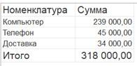
Отчет выводит информацию по выбранной валюте, а также подводит общий итог.
Подготовка
q Создать новую информационную базу.
q Открыть информационную базу в режиме «Конфигуратор».
q Открыть окно конфигурации.
Подробнее о том, как это сделать, смотрите в Лабораторной работе № 2 (стр. 17).
Выполнение
Из условия следует, что нужно хранить информацию о покупателях, товарах и услугах, а также валютах. Для решения этой задачи нам понадобятся справочники.
Определение
Справочник – это объект конфигурации, который хранит справочную информацию, например, перечень товаров или список сотрудников (более подробно про справочники можно прочитать здесь: https://v8.1c.ru/platforma/spravochniki/).
Создадим справочник «Номенклатура».
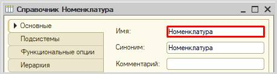
Перейдем на вкладку «Данные» и добавим реквизит «ЭтоУслуга», тип – «Булево». Данный реквизит необходим для того, чтобы отличать товары от услуг в справочнике.
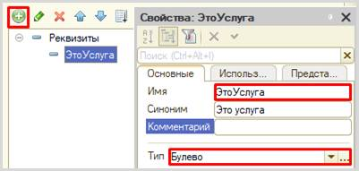
Создадим справочник «Контрагенты».

Создадим справочник «Валюты».

Обязательной валютой в данной информационной системе является рубль. Создадим предопределенный элемент.
Определение
Предопределенные элементы – это такие элементы, которые создает разработчик в конфигураторе для удобства работы пользователя.
Созданный таким образом элемент будет доступен пользователю с первого запуска программы. Для создания такого элемента перейдем на вкладку «Прочее» и откроем список предопределенных элементов справочника.
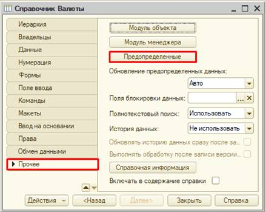
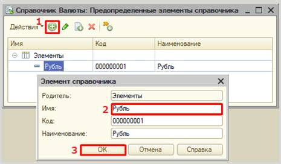
Откроем программу в режиме «1С:Предприятие» и добавим в каждый справочник несколько элементов.
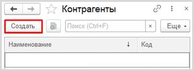
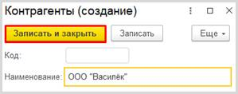
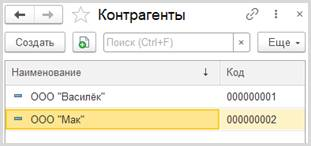
Аналогично добавьте элементы в справочники «Номенклатура» и «Валюты».
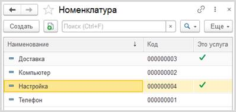
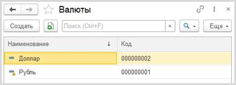
Заметим, что предопределенные элементы в справочнике отмечены желтым маркером.
Чтобы хранить курсы валют, которые меняются со временем, нам понадобится специально настроенный справочник. Такой прикладной объект называется регистр сведений (подробнее про регистры сведений можно прочитать здесь: https://v8.1c.ru/platforma/registr-svedeniy/).
Создадим регистр сведений и назовем его «КурсыВалют». Поскольку курс валют может меняться раз в день, то установим периодичность в пределах дня.
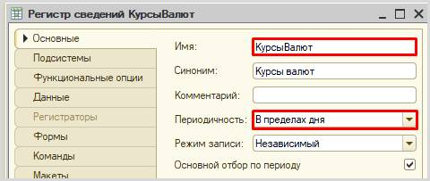
На вкладке «Данные» определим структуру нашего регистра.
Мы должны задаться вопросом: «Что мы хотим хранить?». Мы хотим хранить курс. То, что мы хотим хранить, – это и есть ресурс. Добавим ресурс «Курс».
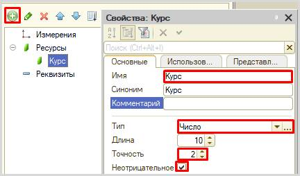
После того, как мы определили, что хотим хранить, нужно понять: в разрезе чего мы хотим это хранить? Курсы мы хотим хранить в разрезе валют. Значит, валюта – измерение.
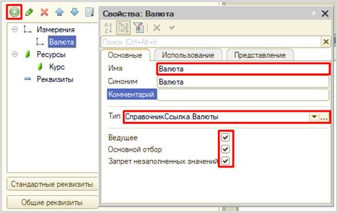
Свойство «Ведущее» позволит нам переходить к курсу валюты прямо из справочника соответствующего элемента.
Запустим режим «1С:Предприятие» и заполним курсы валют на разные даты.
Откроем карточку элемента справочника «Валюты» и убедимся в работоспособности настройки свойства «Ведущее».
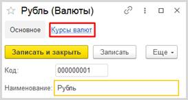
Обязательно укажем курс для рубля. Поскольку рубль к рублю идет в отношении 1:1, то укажем курс рубля – «1». Указывать будем на начало года.
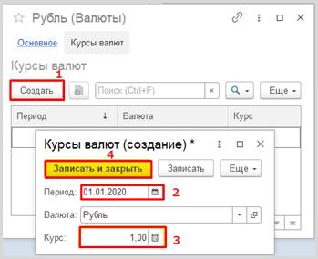
Добавьте курсы на разные даты, в том числе и для других валют.
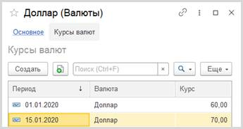
Для регистрации продаж следует воспользоваться объектом конфигурации документ.
Определение
Документ – это объект конфигурации, хранящий информацию о каких-либо событиях, произошедших в «жизни» предприятия. Например, с помощью документа можно зарегистрировать (то есть сохранить данные документа для последующей обработки) продажу товаров или начисление зарплаты (подробнее про документы можно прочитать здесь: https://v8.1c.ru/platforma/dokumenty/).
Добавим новый документ «Продажи».
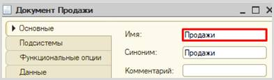
Для настройки структуры документа переходим на вкладку «Данные».
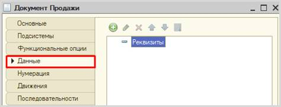
Из условия следует, что при продаже нужно указывать покупателя и валюту. Также будем хранить и итоговую стоимость.
Добавим реквизит «Покупатель».
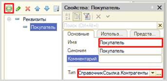
Далее добавим реквизит «Валюта».
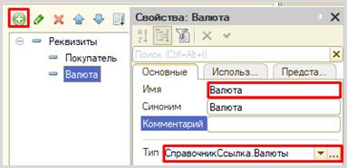
Пользователь может не использовать возможность ведения учета в различных валютах. В этом случае поле «Валюта» у него будет отсутствовать (этот функционал мы реализуем далее), но системе необходимо понимать, к чему привязана итоговая стоимость: к рублям или, например, долларам.
Поэтому установим значения заполнения по умолчанию на вкладке «Представление».
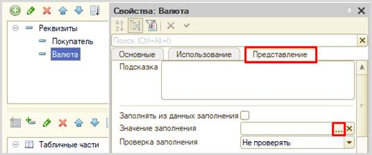
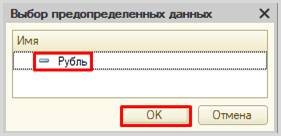
Таким образом, у пользователя по умолчанию будет указана валюта «Рубль», причем пользователь об этом может даже не знать.
Последним реквизитом в шапку документа добавим «ВсегоКОплате».

Чтобы регистрировать продажу товаров и услуг в одном документе, необходимо добавить две табличные части.
Сначала добавим табличную часть «СписокТоваров».
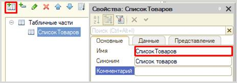
Добавим реквизит табличной части (колонку) «Товар».
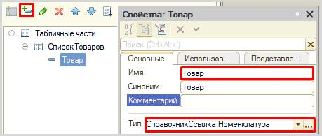
Поскольку мы ссылаемся на общий справочник «Номенклатура», то нам нужно на вкладке «Представление» настроить отбор только по тем элементам, у которых значение реквизита «ЭтоУслуга» установлено в положение «Ложь». Таким образом, пользователь будет в списке выбора видеть только товары.
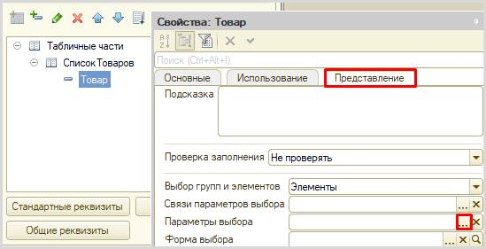
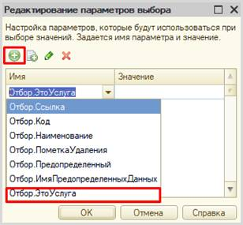
Поскольку в справочнике «Номенклатура» мы указывали для этого реквизита тип «Булево», то в значении параметра нужно указать именно его.
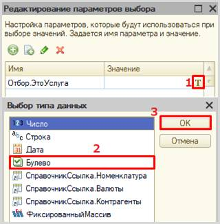
Для товаров значение «ЭтоУслуга» будет установлено в положении «Ложь».
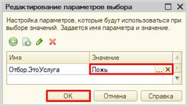
Далее добавим реквизит табличной части «Сумма».
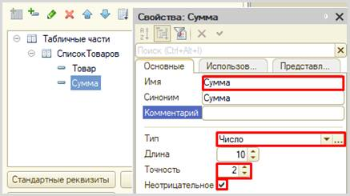
Табличная часть «СписокУслуг» структурно будет совпадать с уже созданной табличной частью «СписокТоваров». Для увеличения скорости разработки скопируем существующую табличную часть и несколько изменим ее.
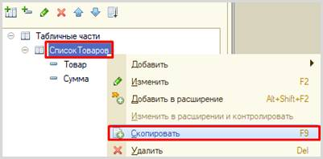
Во-первых, изменим свойство «Имя» у скопированной табличной части. Назовите табличную часть «СписокУслуг».
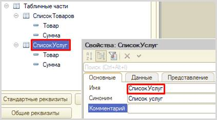
Во-вторых, изменим свойство «Имя» у реквизита табличной части «Товар». Поскольку данная табличная часть будет хранить перечень услуг, то и реквизиту нужно дать имя «Услуга».

В-третьих, на вкладке «Представление» изменим параметры выбора: для услуг значение типа «Булево» будет в положении «Истина».
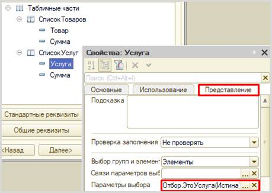
Чтобы итоговая стоимость формировалась автоматически, нам нужно описать событие в модуле документа «Продажи».
Для этого перейдем на вкладку «Прочее» и откроем «Модуль объекта».
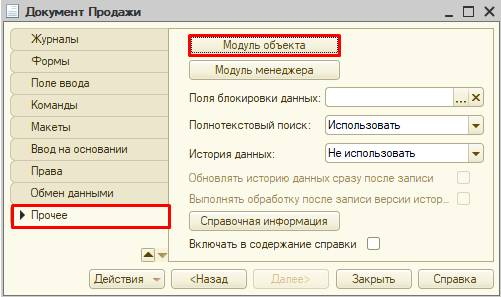
Перед нами откроется модуль объекта, в котором нужно определить событие, при наступлении которого будет происходить описываемый алгоритм.
Нам понадобится системное событие, вызовем его через главное меню «Текст» à «Процедуры и функции».
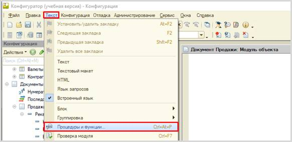
В открывшемся окне выберем «ПередЗаписью».
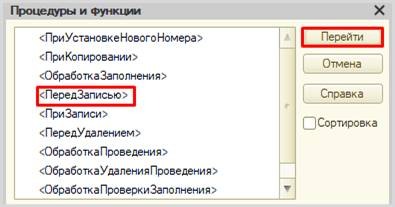
В модуле объекта сформируется обработчик события. Далее нам нужно описать подсчет итоговой суммы как итог по товарам и услугам.
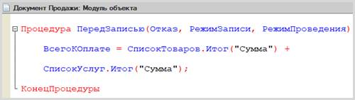
ВсегоКОплате = СписокТоваров.Итог("Сумма") + СписокУслуг.Итог("Сумма");
Запустим режим «1С:Предприятие» и создадим несколько документов.
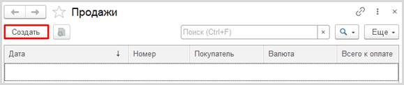
Заполним поля шапки документа, проигнорировав поле «Всего к оплате» (оно заполнится автоматически при записи).
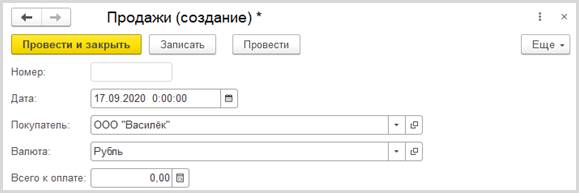
Обратим внимание, что поле «Валюта» уже было заполнено по умолчанию.
Затем заполним таблицы «Список товаров» и «Список услуг».
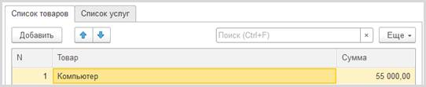
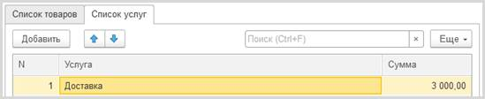
Внимание!
В список товаров можно добавлять только товары, а в список услуг – только услуги.
В момент записи или проведения документа поле «Всего к оплате» заполнится автоматически.
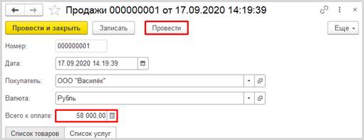
Создайте еще несколько документов на разных покупателей и разные валюты.
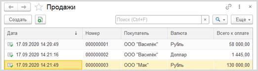
Сейчас мы по умолчанию установили валюту «Рубль», оставив пользователю возможность выбора другой валюты. Но возможность использовать разные валюты нам нужно сделать опциональной. Для этого воспользуемся общим механизмом функциональные опции. Более подробно про функциональные опции можно прочитать здесь: https://v8.1c.ru/platforma/funktsionalnaya-opciya/.
У пользователя должен быть физический способ включения и отключения многовалютного учета. Реализуем это с помощью обычной константы с типом «Булево».
Добавим константу «ВестиМноговалютныйУчет».
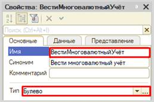
Теперь приступим к созданию и настройке функциональной опции.
В ветке «Общие» дерева конфигурации найдем раздел «Функциональные опции» и добавим опцию с именем «ВестиМноговалютныйУчет».
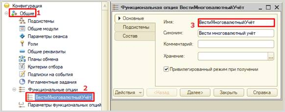
Теперь перейдем к ее настройке.
Первым делом нужно указать, где она будет храниться. Укажем в качестве места хранения заранее заготовленную константу с аналогичным именем.
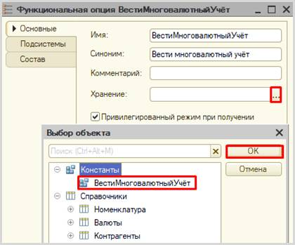
Затем нужно указать, на что будет влиять наша функциональная опция. Она должна «включать» и «выключать» поле «Валюта» в документе «Продажи».
Укажем необходимые реквизиты на вкладке «Состав».
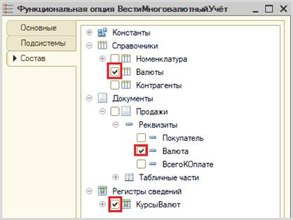
Запустим режим «1С:Предприятие» и проверим работоспособность.
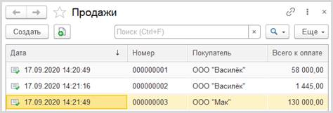
Открыв список документов, мы обнаружим, что отсутствует колонка «Валюта». Это связано с тем, что значение типа «Булево» по умолчанию – «Ложь». Чтобы вновь иметь возможность выбирать валюты, следует у константы перевести значение в положение «Истина» и перезапустить режим «1С:Предприятие».
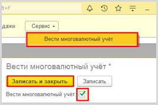
При повторном открытии списка всех документов после проделанных действий мы обнаружим, что колонка «Валюта» снова отображается.
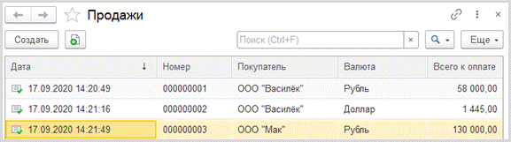
«В системе нужно реализовать хранилище суммы доходов в рублях по номенклатурным позициям».
Для решения такого рода задачи нам потребуется регистр накопления вида «Обороты» (подробнее про регистры накоплений можно прочитать здесь: https://v8.1c.ru/platforma/registr-nakopleniya/).
Добавим регистр накопления «Продажи».
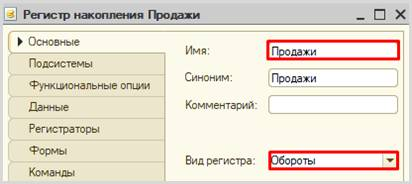
Как и в случае с регистром сведений, на вкладке «Данные» определим структуру нашего регистра. Отвечая на вопросы: «что?» и «в разрезе чего?», укажем, что в качестве измерения будет выступать «Номенклатура», а в качестве ресурса – «Сумма».
Далее на вкладке «Регистраторы» следует указать документ-регистратор для нашего регистра.
Но для совершения движений данных в регистр этого недостаточно. Необходимо описать правила с помощью конструктора движений документа «Продажи».
Но кроме табличной части с товарами есть и вторая часть – с услугами. Чтобы учитывать и ее – создадим еще одно движение в тот же регистр.
В модуле объекта (там же, где мы описывали итоговый подсчет) сформируется программный код, он будет совершать движения исключительно по числовым значениям реквизита «ВсегоКОплате», тем самым складывая рубли и другие валюты без разбора. Нам нужно это исправить.
Суммовые движения будут происходить как произведение суммы товара на его курс валюты, который мы будем получать с помощью функции – ее мы создадим позже.
* ПолучитьКурсВалюты(Валюта, Дата)
Следующим этапом будет написание функции, которая будет обращаться к регистру сведений и получать актуальный курс валют.
Информацию мы будем получать с помощью запроса к виртуальной таблице – нам нужен срез последних значений по указанным валюте и дате.
Установим курсор внутри функции и вызовем контекстное меню правой кнопкой мыши.
В открывшемся окне на вкладке «Обработка результата» следует выбрать тип обработки «Обход результата».
Переходим на вкладку «Таблицы и поля».
Открывается конструктор запроса. Эта вкладка имеет три части:
q Часть слева отображает все объекты конфигурации, имеющиеся в нашей базе данных. Нужно выбрать лишь те объекты, из которых мы хотим получать данные.
q Посередине находятся таблицы – это выбранные нами объекты, откуда мы хотим получать данные для конкретного отчета.
q Справа поля – это те значения (поля), которые мы хотим увидеть в отчете.
Данные будем брать не из регистра сведений напрямую, а из виртуальной таблицы, которую создает этот регистр автоматически. Данная виртуальная таблица позволит получить последние введенные значения по каждой валюте.
Чтобы перенести данные из одного окна в другое, просто перетащите
нужные поля с помощью мыши либо воспользуйтесь стрелочками, расположенными
между окнами.
В результате данное окно должно быть
заполнено следующим образом:
Далее нужно преобразовать полученный программный код.
Виртуальная таблица позволяет использовать встроенные методы для работы с параметрами. Такими параметрами у нас будут выступать период и валюта.
Далее нужно установить значения этих параметров. Укажем их как передаваемые в функцию параметры «Валюта» и «Дата».
Поскольку мы создаем функцию, то в самом конце нам нужно вернуть значение курса валюты.
Итоговый программный код функции «ПолучитьКурсВалюты» будет таким:
Чтобы движения были совершены в регистр накопления, необходимо перепровести (провести повторно) созданные документы.
Запустим режим «1С:Предприятие» и сделаем это.
Обратите внимание, что на главной странице система не создала кнопку открытия регистра накопления. Это связано с тем, что все расчеты в регистрах накопления происходят в фоновом режиме, «за кадром», то есть пользователю о них знать не нужно вовсе. Поэтому по умолчанию регистры накопления настраивают так, чтобы пользователи не имели к ним доступа.
Но мы, будучи разработчиками, можем обратиться к любому объекту конфигурации. Для этого воспользуемся функциями для технического специалиста.
В общем перечне элементов следует найти регистр накопления «Продажи» и открыть его.
Если соотнести результаты, например, по движениям за 16 января, то заметим, что в регистр пришли значения с учетом указанного за 15 января курса, так как 16 числа не было изменений в курсе.
«Необходимо построить «Отчет по продажам» с упорядочиванием по сумме доходов».
Построим отчет. Для этого воспользуемся соответствующим объектом конфигурации.
Определение
Отчет – это такой объект конфигурации, который формирует данные в понятном для пользователя виде, например, в виде таблицы или диаграммы (подробнее про отчеты можно прочитать здесь: https://v8.1c.ru/platforma/otchet/).
Добавим отчет «Продажи». Воспользуемся схемой компоновки данных.

Добавим новый запрос к базе данных.

Для формирования запроса воспользуемся конструктором запроса.
Открывается конструктор запроса. Эта вкладка имеет три части:
q Часть слева отображает все объекты конфигурации, имеющиеся в нашей базе данных. Нужно выбрать лишь те объекты, из которых мы хотим получать данные.
q Посередине находятся таблицы – это выбранные нами объекты, откуда мы хотим получать данные для конкретного отчета.
q Справа поля – это те значения (поля), которые мы хотим увидеть в отчете.
Данные будем брать из регистра накопления напрямую, чтобы иметь возможность рассчитывать средний балл.
Чтобы перенести данные из одного окна в другое, просто перетащите нужные поля с помощью мыши либо воспользуйтесь стрелочками, расположенными между окнами.
В результате данное окно должно быть заполнено следующим образом:
У нас сформируется запрос на встроенном языке запросов 1С.
Для красоты зададим синоним полю «СуммаОборот». Сделать это можно с помощью конструктора запроса либо прямо в окне запроса.
Далее мы реализуем итоговый подсчет всех сумм для нашего отчета, указав поле «Сумма» в качестве ресурса на соответствующей вкладке.
Теперь переходим на вкладку «Настройки» для оформления внешнего вида отчета.
Воспользуемся конструктором настроек отчета.
Построим отчет в виде списка.
Выберем поля, которые будут отображаться в отчете.
Этап группировки пропустим.
Отсортируем
отчет по возрастанию поля «Сумма».
Отчет готов. Запустим систему в режиме «1С:Предприятие» и построим отчет, указав разные валюты.
Поставленная задача решена.